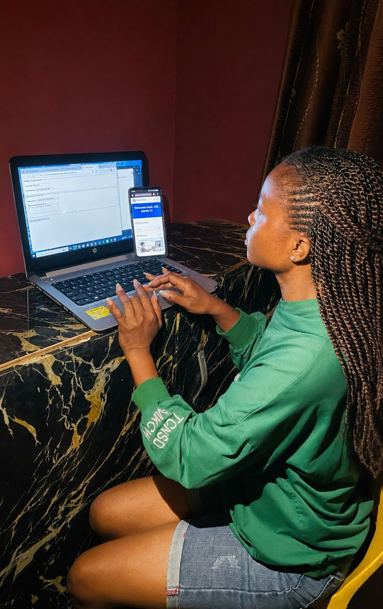

Who I Am
My name is Gift Uchechi Chima, and I am an aspiring Software Developer and Virtual Assistant based in Lagos, Nigeria.
Before beginning my journey into technology, I built several years of experience working in sales. That experience helped me develop strong communication, customer service, teamwork, and problem-solving skills.
Although I appreciated the experience I gained, I realised I wanted a career where I could continue learning, create meaningful solutions, and grow professionally. Because of that, I made the decision to leave my demanding job and focus on building a future in the tech industry.

My Learning Journey
I am currently studying Software Development through TS Academy while also learning Virtual Assistance. Every lesson, coding exercise, and project helps me become more confident and improves my technical skills.
I enjoy building websites with HTML and CSS, and I look forward to learning JavaScript and other technologies as I continue my journey.

Looking Ahead
This website is more than just an assignment—it is a record of my progress. As I complete more projects, gain experience, and earn certifications, I will continue updating this portfolio to reflect my growth.
My goal is to build useful digital solutions, work with amazing teams, and continue learning throughout my career.